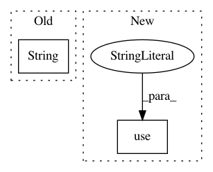

3f25909ad952325b959c4cfb24bf6452c21a460a,pynets/plotting.py,,plot_conn_mat,#Any#Any#Any#Any#Any#Any#Any#Any#,11
Before Change
out_path_fig=dir_path + "/" + str(ID) + "_" + atlas_select + "_" + str(os.path.basename(mask).split(".")[0]) + "_adj_mat_" + str(conn_model) + ".png"
else:
if network != "None":
out_path_fig=dir_path + "/" + str(ID) + "_" + atlas_select + "_" + str(network) + "_adj_mat_" + str(conn_model) + "_network.png"
else:
out_path_fig=dir_path + "/" + str(ID) + "_" + atlas_select + "_adj_mat_" + str(conn_model) + ".png"
After Change
def plot_conn_mat(conn_matrix, conn_model, atlas_select, dir_path, ID, network, label_names, mask):
import matplotlib
matplotlib.use("Agg")
from matplotlib import pyplot as plt
if mask:
if network:
out_path_fig=dir_path + "/" + str(ID) + "_" + str(atlas_select, "utf-8") + "_" + network + "_" + str(os.path.basename(mask).split(".")[0]) + "_adj_mat_" + str(conn_model) + "_network.png"
In pattern: SUPERPATTERN
Frequency: 3
Non-data size: 2
Instances
Project Name: dPys/PyNets
Commit Name: 3f25909ad952325b959c4cfb24bf6452c21a460a
Time: 2018-01-08
Author: dpisner@utexas.edu
File Name: pynets/plotting.py
Class Name:
Method Name: plot_conn_mat
Project Name: danforthcenter/plantcv
Commit Name: 934b0e505169c80fb0e068aa45add2277ee2b721
Time: 2016-04-25
Author: noahfahlgren@gmail.com
File Name: lib/plantcv/analyze_NIR_intensity.py
Class Name:
Method Name: analyze_NIR_intensity
Project Name: baldassarreFe/deep-koalarization
Commit Name: 201a614ea4288f4dc33b5ed7923c5a03684bf1ad
Time: 2017-05-10
Author: baldassarre.fe@gmail.com
File Name: colorization/train_network.py
Class Name:
Method Name: